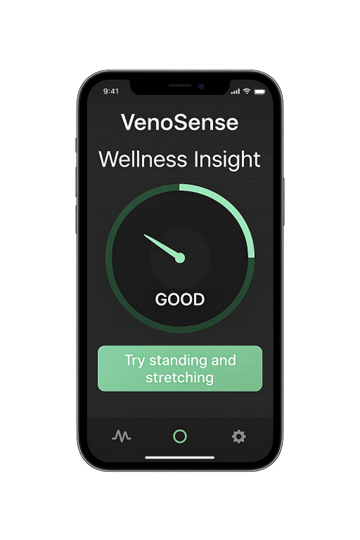

VenoSense is developing a wearable medical device for continuous, early detection of DVT risk – where it matters most: outside the hospital.
Get in TouchDeep Vein Thrombosis (DVT) is a life-threatening condition where blood clots form in deep veins, usually in the legs. Often silent and symptom-free, DVT can lead to pulmonary embolism if undetected. Risk increases after surgery, long travel, or prolonged immobility – yet continuous monitoring remains rare.
We are building a discreet, AI-powered wearable that continuously monitors vascular health in real time. By combining multiple biosignals with machine learning, VenoSense can detect subtle physiological changes that may indicate rising DVT risk – enabling early action and preventing emergency outcomes.
Our goal is to empower individuals and clinicians with actionable insights, from hospital to home. The solution is designed with medical certification in mind and will evolve into a CE-marked diagnostic support system.
VenoSense provides an intuitive dashboard that visualizes vascular trends and user activity, turning biosignal data into clear, actionable feedback. Below is a preview from our concept design.
CEO & Regulatory Lead
15+ years in MedTech, Quality & Compliance
CTO & Head of Innovation
14+ years in simulation engineering and R&D
Interested in partnerships, pilot studies, or funding opportunities? We’d love to hear from you.
info@venosense.comVenoSense GmbH (in Gründung)
Placeholderstraße 1, 1010 Wien, Austria
Email: info@venosense.com
Represented by:
Mario Schrenk & Sandra Seichter
This website does not collect personal data or use tracking technologies. No contact form or cookie storage is implemented. For email inquiries, standard email transmission applies. Please do not send sensitive health information via email.